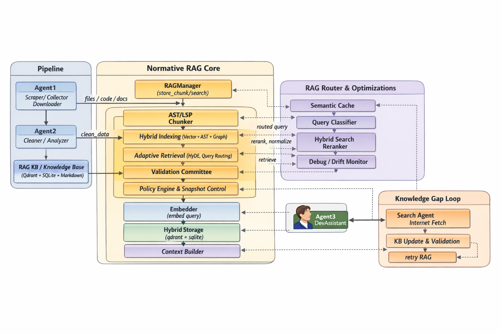

Normative AI Dev OS
превращает AI-разработку
в управляемую инженерную систему
Governance-first RAG платформа для воспроизводимой, аудируемой и контролируемой AI-поддержки разработки ПО.
Почему текущий подход к AI-разработке
не работает в enterprise
Невоспроизводимость результатов
LLM возвращают разные ответы на одинаковые запросы. Невозможно гарантировать, что AI-ассистент сработает одинаково в двух идентичных сценариях.
Отсутствие аудита
Нет инструментов для отслеживания того, какие данные использовал AI, на каком основании принято решение и кто утверждал результат.
Риски безопасности кода
AI-генерация кода без контроля приводит к уязвимостям, утечкам чувствительной логики и несоответствию стандартам безопасности.
vendor lock-in
Привязка к одному LLM-провайдеру без возможности переключения модели или использования приватных развёртываний.
AI как governed engineering system,
не как generative service
Normative AI Dev OS — это платформа, которая встраивает AI-поддержку в инженерный процесс с контролем на каждом этапе: от запроса до коммита.
Snapshot-фиксация состояния всех компонентов: модель, промпт, контекст, параметры.
Trace Graph фиксирует полную цепочку: от запроса до применения изменений в коде.
Validator Committee обеспечивает независимую валидацию и унифицированный интерфейс.
Multi-tenant sandboxes с гранулярным контролем доступа на уровне знаний и проектов.
Governance-Centric Enterprise Architecture
Snapshot-centric AI engineering architecture with reproducibility, governance, traceability, and controlled execution at the core.

Control Plane
Node.js + TypeScript orchestration layer managing governance, policies, snapshots, and execution flow.
Compute Plane
Python runtime responsible for retrieval, validation, evaluation, and AI execution services.
Traceability Layer
Append-only event store and trace graph ensuring auditability and reproducibility.
Governance Layer
Policy-driven validation and lifecycle governance for enterprise-grade AI engineering.
Двухплоскостная архитектура
с разделением control и compute
Control Plane (Node.js LTS, TypeScript) управляет политиками, маршрутизацией, аудитом и жизненным циклом знаний. Compute Plane (Python 3.11+) исполняет модели, векторные вычисления и валидацию. Снапшоты фиксируют состояние каждой операции.
Snapshot-centric Reproducibility
Полная воспроизводимость каждого AI-взаимодействия через снапшоты состояния.
Hybrid Retrieval
Векторный + графовый + keyword поиск с ранжированием по релевантности.
Validator Committee
Множественные валидаторы для кросс-проверки результатов разных моделей.
Trace Graph
Поведенческий граф всех взаимодействий с append-only event store.
Knowledge Lifecycle Governance
Управление версиями знаний, утверждение публикаций, автоматическое устаревание.
Continuous Evaluation
Автоматическое тестирование quality gates при каждом обновлении знаний или модели.
Multi-tenant Isolation
Полная изоляция проектов, знаний и контекстов на уровне инфраструктуры.
Control & Compute Planes
Node.js/TS control plane + Python 3.11+ compute plane с асинхронной коммуникацией.
Каждое AI-взаимодействие
под контролем
Append-Only Event Store
Неизменяемая хронология всех событий: запросы, ответы, валидации, коммиты. Immutable audit trail для compliance и расследований.
Policy Engine
Декларативные политики, определяющие какие модели, данные и паттерны разрешены в каждом контексте. Интеграция с существующими compliance-фреймворками.
Knowledge Lifecycle
Полный цикл управления корпусом знаний: ingestion, верификация, версионирование, деприкация, архивация. Каждый фрагмент знаний имеет метаданные происхождения.
Quality Gates
Автоматическая проверка каждого AI-сгенерированного результата перед передачей разработчику. Метрики точности, безопасности, стиля и соответствия стандартам.
Готова к внедрению
в корпоративную инфраструктуру
Self-hosted deployment
Полный контроль над данными. Развёртывание в приватном облаке или on-premises.
SSO / SAML / OIDC
Интеграция с корпоративными identity-провайдерами и RBAC.
Audit Logs & Compliance
Append-only логи с экспортом в SIEM-системы и поддержкой SOC 2, GDPR.
Model Agnostic
Поддержка OpenAI, Anthropic, open-source моделей и приватных развёртываний.
API-first Design
Программируемый доступ ко всем функциям платформы через REST и gRPC.
Horizontal Scaling
Шардирование по tenants, параллельная валидация, распределённый trace storage.
Две плоскости, одна платформа
- Policy enforcement & routing
- Trace Graph orchestration
- Knowledge lifecycle management
- Snapshot coordination
- Tenant isolation & auth
- REST/gRPC API gateway
- LLM inference orchestration
- Vector store & hybrid retrieval
- Validator Committee execution
- Continuous evaluation runners
- Knowledge embedding pipeline
- Quality gate computation
Готовы построить governed AI-разработку?
Обсудим архитектуру, требования к безопасности, сценарии внедрения и дорожную карту.
или напишите: s06621848@gmail.com Скопировано